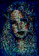

Method Image.Colortable()->randomgrey()
- Method randomgrey
object
objectintr,intg,intb)
object
objectinterr)- Description
-
Set random cube dithering. Color choosen is the closest one to color in picture plus (flat) random error; color±random(error).
The randomgrey method uses the same random error on red, green and blue and the randomcube method has three random errors.

 original mapped to
Image.Colortable(4,4,4)->randomcube() randomgrey() 

- Parameter
r - Parameter
g - Parameter
b - Parameter
err -
The maximum error. Default is 32, or colorcube step.
- Returns
-
the object being called
- Note
-
randomgrey method needs colorcube size to be the same on red, green and blue sides to work properly. It uses the red colorcube value as default.
- See also